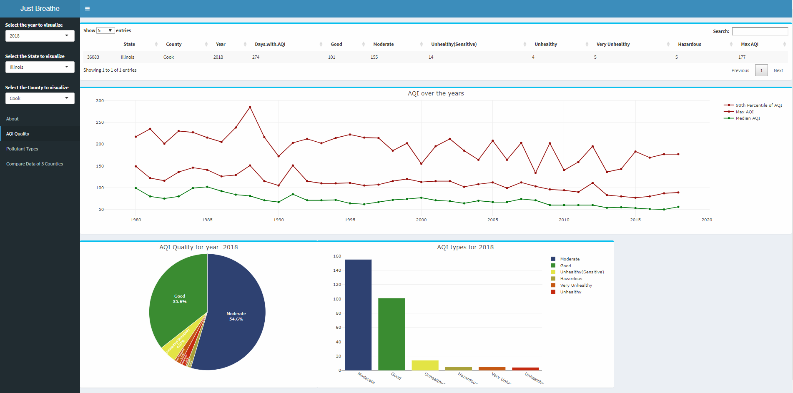

Link to the Project
Source code
In order to run this project kindly install the latest version of R studio. Install all the necessary libraries used in the source code (located at the top of the source code) using install.packages(“library-name”). Also make sure to set the directory of R to where the source code is located in your computer.
Make sure to check this video out.
The idea behind this project is to visualize the air quality of United States and how it has changed in the past 40 years. Data used in this project is taken from the official website of United States Environmental Protection Agency. We will use this data to try and find out some interesting trends in air quality of various US counties.
In this part of the project, we visualize the air quality of any US county using Line graphs, bar graphs and pie charts. On the left side of the sidebar we first select the year and then the state and its corresponding county for which we want to plot the graphs. 1st we have a table which displays the AQI quality (in no of days) for that county in that particular year. 2nd we have a line chart which displays the Maximum AQI , median AQI and 90th percentile of AQI over the past 40 years. Then we have a pie chart which displays the percentage of good, moderate, Unhealthy, Unhealthy (for sensitive people), Very unhealthy and hazardous days for that county in that particular year. And lastly we have a bar graph which shows the same thing but it displays the no of days instead of percentage of days.
In here we visualize the types of pollutants of any US county using Line graph, bar graph and pie chart. We also have a map which pin points the location of that particular county in the world map. We have different types of pollutants like CO, NO2, Ozone, PM 2.5, PM 10 and SO2 which we try to plot the percentage of, for each county in a particular year.

While we have a vast amount of information, it sometimes can be overwhelming. But the line chart under pollutant types helps in simplifying those trends. If we take a close look into the pollutant types for Cook county of Illinois over the past 40 years we can see that the amount of SO2 in the air has decreased dramatically whereas the amount of PM 2.5 has increased drastically. Also the compare data tab can be quite useful in comparing the air quality of 3 counties all at once.